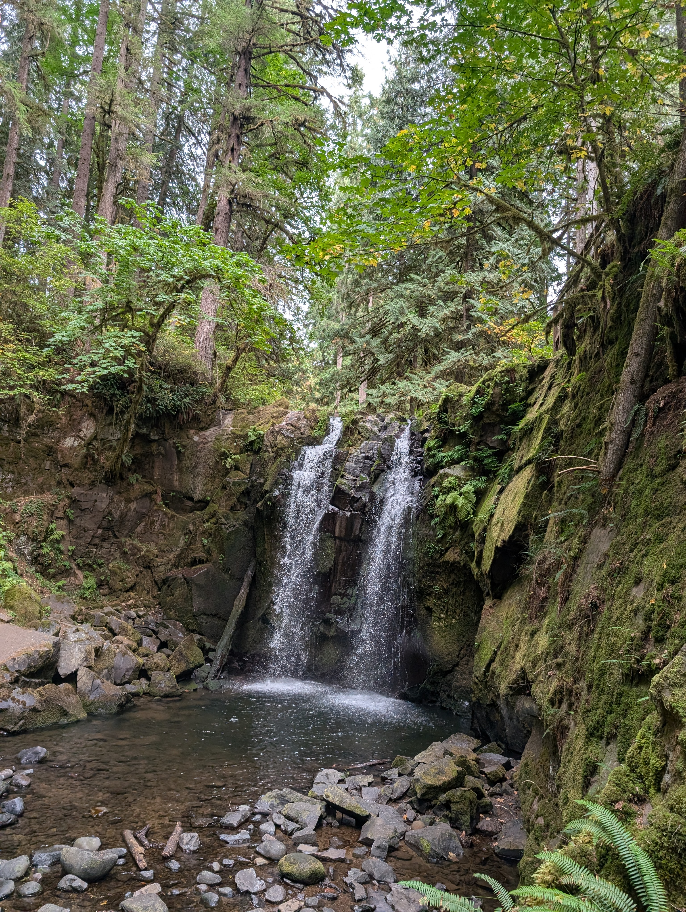

<!DOCTYPE html>
<html lang="en">
<head>
    <meta charset="UTF-8">
    <meta name="viewport" content="width=device-width, initial-scale=1.0">
    <title>AFTI - Training Landing Command Center</title>
    <script src="https://cdn.tailwindcss.com"></script>
    <style>
        :root {
            --bg-color: #0f172a;
            --card-bg: #1e293b;
            --text-color: #f8fafc;
            --primary: #27ae60;
            --primary-hover: #219653;
            --secondary: #3b82f6;
            --accent: #f59e0b;
            --hud-bg: #144d29;
            --blue-accent: #38bdf8;
        }

        body {
            font-family: system-ui, -apple-system, BlinkMacSystemFont, "Segoe UI", Roboto, sans-serif;
            background-color: var(--bg-color);
            color: var(--text-color);
            margin: 0;
            padding: 0;
            min-height: 100vh;
        }

        /* GLOBAL NAV BAR STYLES */
        nav {
            background: #144d29;
            padding: 1rem 2rem;
            display


<div style="margin: 1.5rem 0;">
    <a href="https://www.watershipstewardsempowering.org" target="_blank" style="display: inline-block; background-color: #0ea5e9; color: #ffffff; padding: 12px 20px; border-radius: 6px; text-decoration: none; font-weight: bold; font-size: 1rem; box-shadow: 0 4px 10px rgba(0,0,0,0.2);">
        Explore Our Veteran Programs &amp; Stewardship Mission &rarr;
    </a>
</div>

<!-- Watershed Daily Action BUTTON -->
<h3 style="color: #fff; margin-bottom: 5px; font-size: 1.2rem; margin-top: 2rem;">Daily Research Logs and Action Steps</h3>
<a href="task-checklist.html" class="btn" style="background:var(--primary); margin-top: 0.5rem; margin-bottom: 2rem;"> Watershed Daily Action Steps &rarr;</a>

<!-- CENTERED HORIZONTAL RESEARCH PROTOCOL CALLOUT BAR -->
<div style="width: 100%; display: flex; justify-content: center; margin: 25px 0;">
    <div style="width: 100%; max-width: 950px; background: rgba(30, 41, 59, 0.9); border: 1px solid rgba(56, 189, 248, 0.3); border-left: 4px solid #38bdf8; border-radius: 8px; padding: 15px 20px; display: flex; justify-content: space-between; align-items: center; flex-wrap: wrap; gap: 15px; box-sizing: border-box; box-shadow: 0 4px 12px rgba(0,0,0,0.3);">
        <div style="display: flex; align-items: center; gap: 12px;">
            <span style="font-size: 1.5rem;">🎓</span>
            <div>
                <div style="font-weight: bold; color: #f8fafc; font-size: 0.95rem; display: flex; align-items: center; gap: 8px;">
                    OSU Extension Research Standards 
                    <span style="background: rgba(6, 95, 70, 0.8); color: #a7f3d0; padding: 2px 6px; border-radius: 4px; font-size: 0.75rem; font-weight: normal;">Peer-Review Ready</span>
                </div>
                <div style="font-size: 0.85rem; color: #94a3b8; margin-top: 2px;">
                    Review our standardized metrology, dual-operator chain-of-custody, and telemetry protocols.
                </div>
            </div>
        </div>
    </div>
</div>

<!-- FEATURE SPOTLIGHT CARDS (DESIGN STUDIO & WORKFORCE ENGINE) -->
<div class="my-8">
    <h3 class="text-xl font-bold text-white mb-4">Explore Core Portal Features</h3>
    <div class="grid grid-cols-1 md:grid-cols-2 gap-6">
        
        <!-- Spotlight Card 1: Design Studio Animation -->
        <div class="bg-[#0f172a] border border-sky-500/30 rounded-xl p-6 flex flex-col justify-between hover:border-sky-400 transition shadow-lg">
            <div>
                <span class="text-xs font-mono text-[#38bdf8] uppercase tracking-wider font-bold">Dreamers Visual Pipeline</span>
                <h4 class="text-lg font-bold text-white mt-1 mb-2">Crayon Sketch to Master Plan</h4>
                <p class="text-sm text-slate-300 leading-relaxed">Experience our 4-stage interactive design animation showing how rough community ideas transform into professional architectural blueprints.</p>
            </div>
            <a href="pencil_to_presentation.html" class="mt-6 bg-[#144d29] hover:bg-emerald-800 text-white text-center py-2.5 px-4 rounded-lg text-sm font-bold transition border border-emerald-600/50 block">
                Launch Design Studio &rarr;
            </a>
        </div>

        <!-- Spotlight Card 2: Workforce Engine Simulator -->
        <div class="bg-[#0f172a] border border-emerald-500/30 rounded-xl p-6 flex flex-col justify-between hover:border-emerald-400 transition shadow-lg">
            <div>
                <span class="text-xs font-mono text-[#27ae60] uppercase tracking-wider font-bold">Skills Match Advanced Placement Engine</span>
                <h4 class="text-lg font-bold text-white mt-1 mb-2">Cell Matching &amp; Audit Engine</h4>
                <p class="text-sm text-slate-300 leading-relaxed">Manage participant skill tracks, map partner job wish lists, and run live competency gap audits for active field deployment.</p>
            </div>
            <a href="outgrowing_ag_engine.html" class="mt-6 bg-[#27ae60] hover:bg-emerald-600 text-white text-center py-2.5 px-4 rounded-lg text-sm font-bold transition block shadow">
                Launch Workforce Engine &rarr;
            </a>
        </div>
    </div>
</div>
    
<!-- SIMULATION INTERACTIVE BUTTON -->
<h3 style="color: #fff; margin-bottom: 5px; font-size: 1.2rem; margin-top: 2rem;">Try our simulations. Do you have what it takes to overcome the occasional mistake or bad luck and beat Weather and the Bank Boss in a final high stakes battle?</h3>
<a href="farmer-apprentice-story.html" class="btn" style="background:var(--primary); margin-top: 0.5rem; margin-bottom: 2rem;">The Simulator-Battle to Save the Farm &rarr;</a>

<!-- Centered Tasks Hub Box with Full-Width Stacked Buttons -->
<div style="display: flex; justify-content: center; align-items: center; width: 100%; padding: 2rem 0; box-sizing: border-box;">
    <div class="secondary-card" style="width: 100%; max-width: 750px; background: #1e293b; border: 1px solid rgba(255, 255, 255, 0.1); border-radius: 16px; padding: 2.5rem; box-shadow: 0 10px 30px rgba(0,0,0,0.4); text-align: center;">
        <div style="margin-bottom: 1.5rem;">
            <h4 style="color: #4ade80; font-size: 1.4rem; margin-top: 0; margin-bottom: 0.75rem;">📋 Daily &amp; Weekly Tasks Hub</h4>
            <p style="color: #cbd5e1; font-size: 1.05rem; line-height: 1.6; margin: 0 auto; max-width: 600px;">Core operational routines, safety pairing requirements, and checklists structured across primary enterprise categories.</p>
        </div>
        
        <!-- Full-width stacked button layout -->
        <div style="display: flex; flex-direction: column; gap: 12px; width: 100%;">
            <a href="task-checklists.html?cat=mushrooms" style="display: block; width: 100%; background: #22c55e; color: #0f172a; padding: 14px 18px; border-radius: 8px; font-weight: 700; text-decoration: none; font-size: 1rem; text-align: center; box-sizing: border-box; transition: transform 0.2s, background 0.2s;" onmouseover="this.style.transform='translateY(-2px)'" onmouseout="this.style.transform='translateY(0)'">🍄 Mushrooms</a>
            <a href="task-checklists.html?cat=apiary" style="display: block; width: 100%; background: #22c55e; color: #0f172a; padding: 14px 18px; border-radius: 8px; font-weight: 700; text-decoration: none; font-size: 1rem; text-align: center; box-sizing: border-box; transition: transform 0.2s, background 0.2s;" onmouseover="this.style.transform='translateY(-2px)'" onmouseout="this.style.transform='translateY(0)'">🐝 Apiary</a>
            <a href="task-checklists.html?cat=greens" style="display: block; width: 100%; background: #22c55e; color: #0f172a; padding: 14px 18px; border-radius: 8px; font-weight: 700; text-decoration: none; font-size: 1rem; text-align: center; box-sizing: border-box; transition: transform 0.2s, background 0.2s;" onmouseover="this.style.transform='translateY(-2px)'" onmouseout="this.style.transform='translateY(0)'">🥗 Greens</a>
            <a href="task-checklists.html?cat=flowers" style="display: block; width: 100%; background: #22c55e; color: #0f172a; padding: 14px 18px; border-radius: 8px; font-weight: 700; text-decoration: none; font-size: 1rem; text-align: center; box-sizing: border-box; transition: transform 0.2s, background 0.2s;" onmouseover="this.style.transform='translateY(-2px)'" onmouseout="this.style.transform='translateY(0)'">💐 Flowers</a>
        </div>
    </div>
</div>

<!-- Standalone "Crop & Infrastructure Calculator" Button Box -->
<div style="background: rgba(15, 23, 42, 0.6); border: 1px solid rgba(255, 255, 255, 0.1); border-radius: 10px; padding: 20px; margin: 25px 0; text-align: center;">
    <p style="color: var(--muted); margin: 0 0 15px 0; font-size: 0.95rem;">Evaluate upfront costs, labor demands, and strategic timing for different crop tiers:</p>
    <a href="crop-calculator.html" style="display: inline-block; background: #334155; color: #f8fafc; padding: 12px 24px; border-radius: 8px; font-weight: bold; text-decoration: none; border: 1px solid rgba(255, 255, 255, 0.15); transition: background 0.2s, border-color 0.2s;" onmouseover="this.style.background='#475569'; this.style.borderColor='#38bdf8';" onmouseout="this.style.background='#334155'; this.style.borderColor='rgba(255, 255, 255, 0.15)';">Crop &amp; Infrastructure Calculator →</a>
</div>

<!-- Standalone "How it all Works" Button Box -->
<div style="background: rgba(15, 23, 42, 0.6); border: 1px solid rgba(255, 255, 255, 0.1); border-radius: 10px; padding: 20px; margin: 25px 0; text-align: center;">
    <p style="color: var(--muted); margin: 0 0 15px 0; font-size: 0.95rem;">Looking for a complete breakdown of the backend flow?</p>
    <a href="participant-matching-system.html" style="display: inline-block; background: #334155; color: #f8fafc; padding: 12px 24px; border-radius: 8px; font-weight: bold; text-decoration: none; border: 1px solid rgba(255, 255, 255, 0.15); transition: background 0.2s, border-color 0.2s;" onmouseover="this.style.background='#475569'; this.style.borderColor='#38bdf8';" onmouseout="this.style.background='#334155'; this.style.borderColor='rgba(255, 255, 255, 0.15)';">How it all Works →</a>
</div>

</main>
</body>
</html>
      <h1>🌾 Vocational Training Command Center</h1>
      <p style="text-align: center; margin-bottom: 25px; max-width: 750px; margin-left: auto; margin-right: auto;">
          Welcome to the primary training ledger. Daily and weekly task lists, data logging for research and action steps for issues discovered. Complete interactive simulation stories, pass skill benchmarks, and prove data metrics required to unlock formal grant channels and partner alignments.
      </p>

      <!-- DYNAMIC IMAGE VIEWPORT -->
      <div class="preview-viewport">
          
          <div class="image-caption">MccDowell Creek Falls</div>
      </div>

      <!-- PRIMARY ACTION PORTAL BUTTONS -->
      <div class="primary-actions">
          <a href="farmer-apprentice-story.html" class="portal-btn">
              🎮 Launch Simulator Story Path
              <span>Test yourself across multi-path choices from the street up.</span>
          </a>
          <a href="staff-login.html" class="portal-btn" style="border-color: rgba(56,189,248,0.3);">
              🔒 Administrative Staff Login
              <span>Enter secure 4-digit passcode to review incoming telemetry.</span>
          </a>
      </div>

      <hr class="section-divider">

      <!-- BALANCED 6-BOX TRAINING & OPERATIONS MATRIX -->
      <div class="secondary-section">
          <h3>🌱 Partner-Aligned Curriculum & Operational Matrix</h3>
          <p style="margin-bottom: 20px;">Trainees progress through six comprehensive curriculum and management tracks designed to meet regional agricultural standards:</p>
          
          <div class="secondary-grid">
              <!-- BOX 1: ACADEMIC & SOIL SCIENCE -->
              <div class="secondary-card">
                  <div>
                      <h4>🧪 Academic &amp; Soil Science</h4>
                      <p>Empirical soil diagnostics, clay profile restoration, and regional agricultural research protocols in partnership with extension services.</p>
                  </div>
                  <a href="training-academic-soil.html" class="btn-small">Launch Track →</a>
              </div>

              <!-- BOX 2: FARMER & GROWER OPERATIONS -->
              <div class="secondary-card">
                  <div>
                      <h4>🚜 Farmer &amp; Grower Operations</h4>
                      <p>Working farm logistics, seasonal crop management, cooperative equipment handling, and regenerative agronomy practices.</p>
                  </div>
                  <a href="training-farmer-ops.html" class="btn-small">Launch Track →</a>
              </div>

              <!-- BOX 3: EMERGENCY RESPONSE & CERTIFICATIONS -->
              <div class="secondary-card">
                  <div>
                      <h4>🔥 Emergency Response &amp; Certs</h4>
                      <p>Wildland fire fuel reduction, defensible space clearing, safety compliance audits, and disciplined 5-person crew cell deployment.</p>
                  </div>
                  <a href="training-emergency-certs.html" class="btn-small">Launch Track →</a>
              </div>

              <!-- BOX 4: LEGAL, ADVOCACY & MENTAL HEALTH -->
              <div class="secondary-card">
                  <div>
                      <h4>⚖️ Legal, Advocacy &amp; Support</h4>
                      <p>Wraparound stability, trauma-informed peer communication, community re-entry frameworks, and municipal advocacy navigation.</p>
                  </div>
                  <a href="training-legal-support.html" class="btn-small">Launch Track →</a>
              </div>

              <!-- BOX 5: LEASE & SHARED HARVEST SUBJECT MATTER -->
              <div class="secondary-card">
                  <div>
                      <h4>🤝 Lease &amp; Shared Harvest</h4>
                      <p>Cooperative lease frameworks, land tenure agreements, shared-harvest revenue splits, and equity incubator strategies.</p>
                  </div>
                  <div class="button-group-wrap">
                      <a href="pencil-to-presentation.html" class="btn-small">Pencil-to-Presentation →</a>
                      <a href="shared-harvest-incubator.html" class="btn-small">Shared Harvest Hub →</a>
                  </div>
              </div>

              <!-- BOX 6: DAILY & WEEKLY OPERATIONAL TASKS HUB -->
              <div class="secondary-card">
                  <div>
                      <h4>📋 Daily &amp; Weekly Tasks Hub</h4>
                      <p>Core operational routines, safety pairing requirements, and checklists structured across primary enterprise categories.</p>
                  </div>
                  <div class="button-group-wrap">
                      <a href="task-checklists.html?cat=mushrooms" class="btn-small">🍄 Mushrooms</a>
                      <a href="task-checklists.html?cat=apiary" class="btn-small">🐝 Apiary</a>
                      <a href="task-checklists.html?cat=greens" class="btn-small">🥗 Greens</a>
                      <a href="task-checklists.html?cat=flowers" class="btn-small">💐 Flowers</a>
                  </div>
              </div>
          </div>
      </div>

    </div>
  </div>

  <script>
      function toggleTestBypass() {
          const status = document.getElementById('test-mode-status');
          if (status.innerText === 'Live Mode') {
              status.innerText = 'Test Bypass Active';
              status.style.color = '#22c55e';
          } else {
              status.innerText = 'Live Mode';
              status.style.color = '#cbd5e1';
          }
      }
  </script>
</body>
</html>
